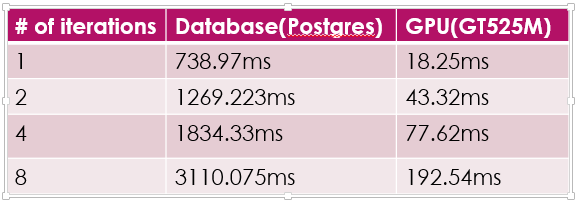

By Han Zhou (hanzhou) and Shannon Williams (srw)
We implemented a high-performance, large scale graph mining on GPUs which outstripped the CPU on a single machine. However, since we did not manage to extend it to multi-core, it cannot tackle arbitrarily large graphs as PEGASUS can.
This project is inspired from PEGASUS, which runs graph mining algorithms on the top of Hadoop. The core idea of PEGASUS is converting graph mining problems to a matrix-vector multiplication and using sql operations to achieve the computation. Therefore the primitive operation is GIM-V (Generalized Iterated Matrix-Vector multiplication). Then it is implemented in Hadoop with some optimizations. See: this paper for details.
One such algorithm is the PageRank algorithm, which we chose to use for our tests. The PageRank algorithm can be defined iteratively as follows: pi+1=(cET+(1−c)U) pi, where:
Previously, we implemented a sequential version of GIM-V in SQL. We plan to use this as a baseline to measure the improvement of our code. The SQL implementation has the advantage of low cost memory reads and writes, but does not take advantage of parallel. CUDA can use parallelism to substantially reduce the computation time at the possible cost of memory latency. We wish to compare these trade-offs. Additionally, if possible, we would like to see if GPU can be used in a multi-core system to compete with large scale distributed systems such as PEGASUS.
Technologies: The following approach was done locally on a personal Lenovo machine. We coded in CUDA and C++.
There are two steps of our implementation. Firstly, we try to process graphs which are small enough to store in memory. Considering the size of adjacent matrix is S(n^2), the number of nodes should not larger than O(10^5) when the common size of memory is GB. If the whole adjacent matrix can be stored in graph memory, then the Graph mining problems are just iteratively matrix-vector multiplications.
The naïve version is quite simple; a thread is used to compute one element of vector. However, from the code below we can find that different threads access data in different locations at the same time.
result[tid]=matrix[tid][i]*vector[i]
For example, thread0 loads matrix[0][0], and thread1 loads matrix[1][0]. If the matrix is big enough, the two data may be in different rows of the memory, thus resulting in sequential access. So we modified our code as:
result[tid]=matrix_transpose[i][tid]*vector[i]
where matrix_transpose is the transpose of original matrix. Since the adjacent matrix is generated from node pairs in file, we can implement it simply by storing data in matrix[j][i] instead of matrix[i][j], which adds no additional workload.We then tried to use shared memory in CUDA model to achieve better performance. We noticed that threads in a block need to access same data of vector. So if each thread loads an element to the shared memory, the latency could be reduced by the shared memory size. Since the major IO latency is the adjacent matrix, the optimization is not very significant.
CUDA also provides a library cuBLAS for the matrix-vector multiplication. It is well optimized. The main latency is creating handle, which is the plan of operations. But once the plan is created, it can be used to all same operations with different parameters and sizes. Considering the advantages, we choose the cuBLAS for our first step implementation.
For the first step of our project we used the wiki-Vote graph provided by Stanford's SNAP Dataset. It contains 7115 nodes with 103,689 edges. So the size of adjacent matrix is 7115*7115*4B = 200 MB. We tested the PageRank algorithm in both Postgres and CUDA
The second step of our project is to deal with larger graph which can not be stored in memory. For this, we considered the Stanford web graph, with 281,903 nodes and 2,312,497 edges. We find that the adjacent matrix of graph in real life is usually a sparse one. Then we decides to fine some effective method to store the adjacent matrix. There are some format of sparse matrix provided by Nvidia. Diagonal format stores compressed matrix and the offsets, and EllPack Format stores indices matrix instead of offset arrays. In our problem, the Compressed Sparse Row Format is more suitable, which changes the 2D-structure to 1D-array. To be more specific, it stores all the none-zero values in a array, and use another two value to clarify different rows and different column indices. This method is quite space saving, which reduces the complexity from S(n^2) to S(n). However, generating this format from node pairs in file is expensive and complex.
The first problem is we need to transpose the adjacent matrix to do the multiplication. But transposing from the CSR format is very expensive. To solve this problem, we choose to storing columns arrays instead of row ones. The potential problem with this solution is that it increases the difficulty of normalizing rows of matrix. In the row-based format, the trap nodes, which have zero-value in the whole row, can be assigned with average value in the row. However, in the column-based format, the values are scattered in different places, thus inserting them to arrays is quite low-efficient. What we choose to do is to ignore these trap nodes in the multiplication. Instead, since these value are with the same row-indices, we can keep a constancy array, multiplying this with pagerank vector, and adding results to the vector. This is additional work, which increases the latency of computing, but will reduce the complexity as well as time in generating the sparse matrix.
Below, we have the results of running the PageRank algorithm with our CUDA code against our Postgresql code on wiki-Vote, our relatively small graph with only 7115 nodes with 103,689 edges; a 7115*7115*4B = 200 MB graph.
We can see that the implementation achieves 50x speedup in CUDA.
In addition to the high space utilization, using sparse matrix format also greatly helps decrease the computing complexity. In the naïve version, matrix-vector multiplication is O(n^3). But in the new version, the complexity decreases to just O(n). The result of Wiki-Vote proves the optimization. When adopting the new method, latency of 1-iteration of Wiki-Vote pageRank is only 1.7ms, which is a 10x speedup.
The space utilization decreases from 300GB to just 10MB. That is, the sparse matrix method can support much larger dataset using a single GPU and achieves better performance.
Since the common content of graph memory is 2~4GB. The sparse method can deal with graph with about 1G nodes in a single GPU. If there are graph with larger size, for example, roadNet-PA has 1,088,092 nodes and is a un-directed graph, which doubles the matrix size. Then a single GPU cannot solve the problem. One solution is to do multi-times disk-IO, reading data from disk to memory, then transferring data to graph memory. The method is quite time-consuming, but can be improved by using asynchronous IO operations. CUDA provides asynchronous functions to load or store data between graph memory and memory. So it can be executed simultaneously with computing process. Another solution is scaling out, multi-GPU in clusters may help. But the communication between nodes is a difficult problem, and may result to high-latency.
From this, we have shown CUDA to be a viable contender for graph anaylsis. It is cheap and portable. A single PC with advanced GPU can achieve quite good performance. Also, it is easy to use. The develop cycle is short, and debug is easy.
However, CUDA has limitations. In our allocated time for the project, we were unable to achieve a functional, multi-core GPU program, as was one of our original goals. Using only a single core, even with a sparse matrix we have size limitations. We cannot scale up to an arbitrarily large graph. Given a graph which fits on a single core, we can see that CUDA has excellent performance. However, given our current results we cannot say that CUDA is a replacement for large, highly-scalable distributed programs such a Pegasus.
Although much of the planning and effort was done collaboratively, the work was divided approximately as follows:
Having trouble with Pages? Check out the documentation at https://help.github.com/pages or contact support@github.com and we’ll help you sort it out.